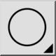
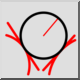

2 Tečny a poloměr
Panel nástrojů / Ikona:


Nabídka: Kreslení > Kružnice > 2 Tečny a poloměr
Zkratka: C, T, R
Příkazy: circletangent2radius | ctr
Popis
Kreslí kružnici se zadaným poloměrem, která je tečná ke dvěma prvkům.
Použití
- Zadejte poloměr do panelu možností.
- Určete první tečný prvek.
- Určete druhý tečný prvek.